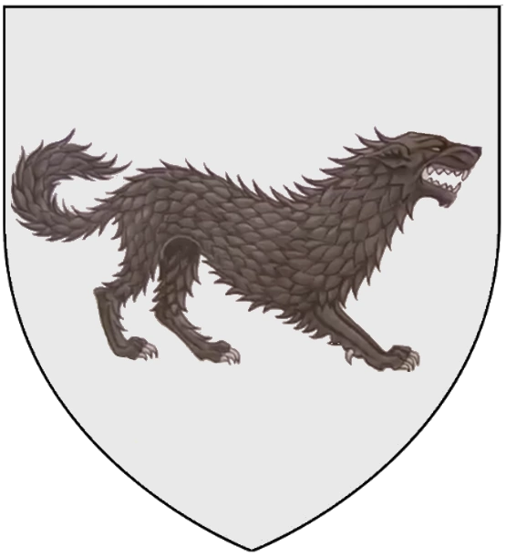
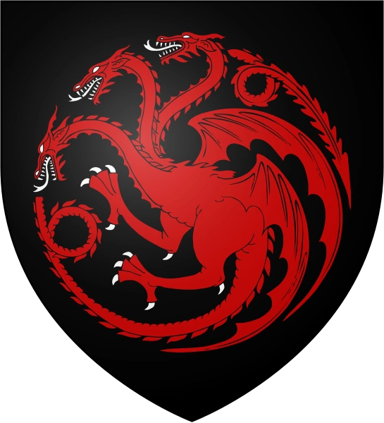
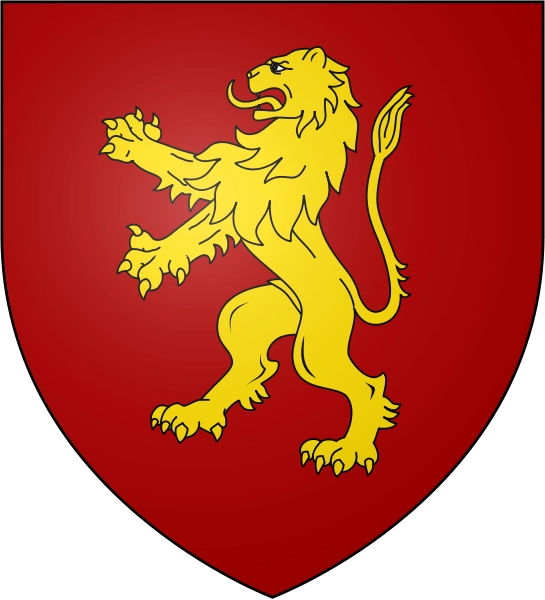
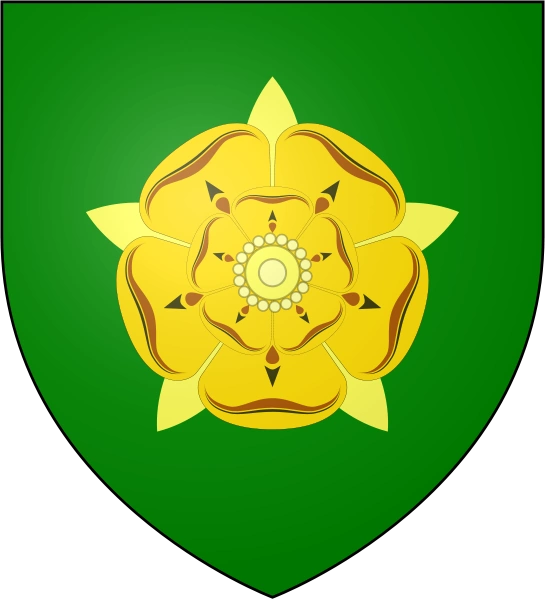
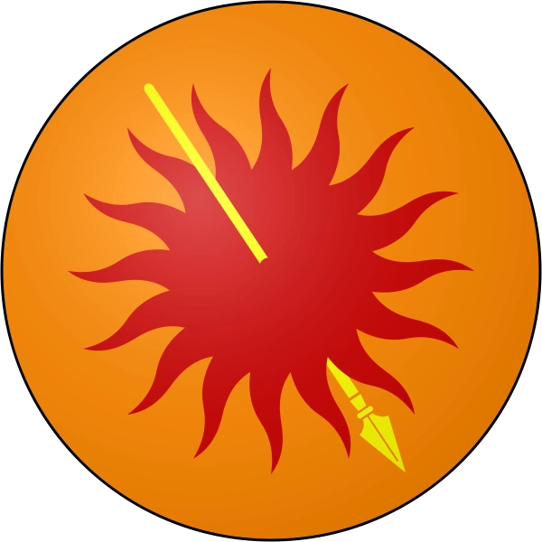

Stark
La Casa Stark de Invernalia es una casa noble del Norte. Su asentamiento es Invernalia. Durante siglos, fue la casa principal del Norte y su linaje se extiende hasta los Primeros Hombres, gobernando el Norte como reyes por derecho propio. Su emblema es un lobo huargo de cenizo corriendo sobre campo de plata. Su lema es Se acerca el Invierno. Su mandoble ancestral de acero valyrio se llamaba Hielo.
Targaryen
La Casa Targaryen es una casa noble de ascendencia Valyria que reinó durante casi trescientos años los Siete Reinos de Poniente. Sus asentamientos eran la capital del reino Desembarco del Rey, la isla de Rocadragón y el castillo de Refugio Estival. Su emblema es un dragón de tres cabezas de gules en campo sable, representando a Aegon I y sus hermanas Rhaenys y Visenya. Su lema es Fuego y Sangre y sus espadas ancestrales de acero valyrio, ambas en actual paradero desconocido, son Fuegoscuro y Hermana Oscura.
Lannister
La Casa Lannister de Roca Casterly es la principal casa noble de las Tierras del Oeste. Su asentamiento es Roca Casterly. Su emblema es un león rampante de oro sobre campo de gules. Su lema es ¡Oye mi Rugido!, aunque su lema no oficial, Un Lannister siempre paga sus deudas, es más conocido.
Baratheon

La Casa Baratheon de Bastión de Tormentas es una casa noble de las Tierras de la Tormenta. Su asentamiento es Bastión de Tormentas, que fue residencia de la Casa Durrandon, los antiguos Reyes de la Tormenta. Su emblema es un venado coronado de sable sobre campo de oro. Su lema es Nuestra es la Furia.
Tyrell
La Casa Tyrell de Altojardín es la casa gobernante del Dominio. Su asentamiento es Altojardín. Su emblema es una rosa en oro sobre campo de sinople. Su lema es Crecer Fuerte
Martell
La Casa Nymeros Martell de Lanza del Sol es la casa gobernante de Dorne. La palabra Nymeros significa de la línea de Nymeria, aunque generalmente es llamada sólo Casa Martell. Su asentamiento es el Palacio Antiguo, ubicado en Lanza del Sol. Su emblema es un sol de gules atravesado por una lanza de oro sobre fondo naranja. Su lema es Nunca Doblegado, Nunca Roto.